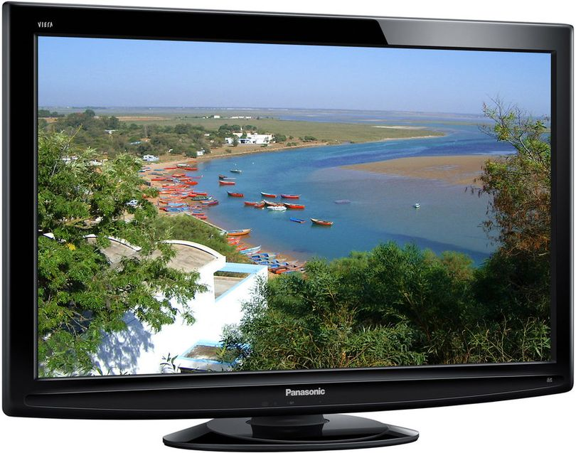

1.7.4. Плазменные панели
Газоразрядный экран или «плазменная панель» (PDP – Plasma Display Panel) — устройство отображения информации, монитор, основанный на явлении свечения люминофора под воздействием ультрафиолетовых лучей, возникающих при электрическом разряде в ионизированном газе, иначе говоря в плазме.
Устройство PDP
Плазменная панель представляет собой матрицу газонаполненных ячеек, заключенных между двумя параллельными стеклянными пластинами, внутри которых расположены прозрачные электроды, образующие шины сканирования, подсветки и адресации. Разряд в газе протекает между разрядными электродами (сканирования и подсветки) на лицевой стороне экрана и электродом адресации на задней стороне.
Рис.7.3. Конструкция плазменной панели (PDP).
Особенности конструкции:
- суб-пиксель плазменной панели обладает следующими размерами 200 мкм x 200 мкм x 100 мкм;
- передний электрод изготовляется из оксида индия и олова, поскольку он проводит ток и максимально прозрачен.
- при протекании больших токов по довольно большому плазменному экрану из-за сопротивления проводников возникает существенное падение напряжения, приводящее к искажениям сигнала, в связи с чем добавляют промежуточные проводники из хрома, несмотря на его непрозрачность;
- для создания плазмы ячейки обычно заполняются газом - неоном или ксеноном (реже используется гелий и/или аргон, или, чаще, их смеси).
Существующая проблема в адресации миллионов пикселей решается расположением пары передних дорожек в виде строк (шины сканирования и подсветки), а каждой задней дорожки в виде столбцов (шина адресации). Внутренняя электроника плазменных экранов автоматически выбирает нужные пиксели. Эта операция проходит быстрее, чем сканирование лучом на ЭЛТ-мониторах. В последних моделях PDP обновление экрана происходит на частотах 400—600 Гц, что не позволяет человеческому глазу замечать мерцания экрана.
Принцип действия PDP
Работа плазменной панели состоит из трех этапов:
- Инициализация, в ходе которой происходит упорядочивание положения зарядов среды и её подготовка к следующему этапу (адресации). При этом на электроде адресации напряжение отсутствует, а на электрод сканирования относительно электрода подсветки подается импульс инициализации имеющий ступенчатый вид. На первой ступени этого импульса происходит упорядочивание расположения ионовой газовой среды, на второй ступени разряд в газе, а на третьей – завершение упорядочивания.
- Адресация, в ходе которой происходит подготовка пикселя к подсвечиванию. На шину адресации подается положительный импульс (+75 В), а на шину сканирования отрицательный (-75 В). На шине подсветки напряжение устанавливается равным +150 В.
- Подсветка, в ходе которой на шину сканирования подается положительный, а на шину подсветки отрицательный импульс, равный 190 В. Сумма потенциалов ионов на каждой шине и дополнительных импульсов приводит к превышению порогового потенциала и разряду в газовой среде. После разряда происходит повторное распределение ионов у шин сканирования и подсветки. Смена полярности импульсов приводит к повторному разряду в плазме. Таким образом, меняя полярность импульсов обеспечивается многократный разряд ячейки.
Один цикл «инициализация — адресация — подсветка» образует формирование одного подполя изображения. Складывая несколько подполей можно обеспечивать изображение заданной яркости и контраста. В стандартном исполнении каждый кадр плазменной панели формируется сложением восьми подполей.
Таким образом, при подведении к электродам высокочастотного напряжения происходит ионизация газа или образование плазмы. В плазме происходит емкостной высокочастотный разряд, что приводит к ультрафиолетовому излучению, которое вызывает свечение люминофора: красное, зелёное или синее. Это свечение проходя через переднюю стеклянную пластину попадает в глаз зрителя.
Достоинства плазменных панелей: угол обзора до 170°, яркость до 3000 кд/м2, контрастность до 30000:1, диагональ до 500 дюймов, почти на порядок ниже вероятность возникновения брака во время изготовления по сравнению с электронно-лучевыми трубками, а также незначительное мерцание изображения. В течение первых нескольких лет эксплуатации плазменные панели обычно обладают более точной цветопередачей, чем жидкокристаллические дисплеи, но меньшей, чем у дисплеев с электронно-лучевыми трубками. Время отклика плазменной матрицы меньше, чем у жидкокристаллической матрицы. Плазменные матрицы, в отличие от электронно-лучевых трубок, не чувствительны к наличию магнитных полей, например, порождённых магнитными системами динамических головок акустических систем.
Недостатки: большая потребляемая мощность, выгорание люминофора после нескольких лет непрерывной эксплуатации, невозможность выполнения пикселей меньше 0,2x0,2x0,1 мм из-за неустойчивого возникновения плазмы. Время отклика плазменной матрицы больше, чем у электронно-лучевой трубки.

Рис. 7.4. Плазменный телевизор.